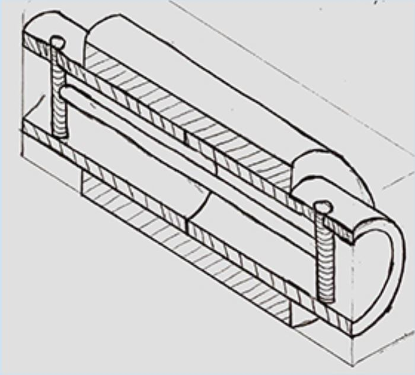

Tony Bayvas
Sophomore
Major: Computer Science
Northwestern University
Sophomore
Major: Computer Science
Northwestern University
DuraCot
The DuraCot project was a solution for an affordable changing table for a child with cerebral palsy. This project was completed during spring of my freshman year in college with my DTC team. For more information about this project, click here.
Computer Science
This space is reserved for future computer science projects.
Born in Istanbul, Turkey, Tony moved to the US in 2007. Tony built a solid foundation in math and the sciences as part of Northwestern's ISP (Integrated Science Program) before declaring his Computer Science major. Most comfortable in the programming languages Python and C++, Tony is always looking to learn more computer skills. An example would be this website, his first project written in HTML and CSS.
Cell: (111) 222-3333
Email:
tonybayvas2022@u.northwestern.edu